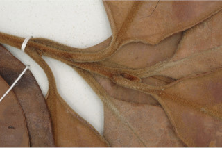
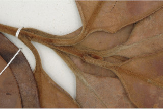

Small trees up to 7 m tall.
7 ಮೀ. ಎತ್ತರದವರೆಗಿನ ಸಣ್ಣ ಮರಗಳು.
Small trees up to 7 m tall.
சிறியமரங்கள் 7 மீ. உயரம் வரை வளரக்கூடியது.
Young branchlets terete, densely fulvous short tomentose.
ಎಳೆಯ ಕಿರುಕೊಂಬೆಗಳು ದುಂಡಾಗಿದ್ದು ನಸುಗೆಂಪು ಮಿಶ್ರಿತವಾದ ಸೂಕ್ಷ್ಮ ಮೃದುತುಪ್ಪಳದಿಂದ ದಟ್ಟವಾಗಿ ಆವೃತಗೊಂಡಿರುತ್ತವೆ.
Young branchlets terete, densely fulvous short tomentose.
சிறியநுனிக்கிளைகள் குறுக்குவெட்டுத் தோற்றத்தில் வளையமானது, அடர்த்தியாக சிறிய உரோமங்களுடையது.
Leaves simple, opposite, decussate; petiole 1.5 cm long, canaliculate, tomentose when young; lamina 7.2-10.5 x 3.2-6 cm, broadly elliptic, apex shortly acuminate with blunt tip to obtuse, base cuneate - attenuate, margin revolute, coriaceous, floccose beneath throughout when young or at least near base and on midrib when mature, pellucid gland dotted; midrib canaliculate above; secondary_nerves, not prominent, ca. 12 pairs; intramarginal nerve present; tertiary_nerves obscure.
ಎಲೆಗಳು ಸರಳವಾಗಿದ್ದು ಅಭಿಮುಖವಾಗಿ ಜೋಡನೆಗೊಂಡಿದ್ದು ಕಾಂಡದ ಎರಡೂ ಕಡೆ ಎದುರು ಬದರಿನ ಲಂಬ ಸಾಲಿನಲ್ಲಿರುತ್ತವೆ;ತೊಟ್ಟುಗಳು 1.5 ಸೆಂ.ಮೀ. ಉದ್ದವಿದ್ದು ಕಾಲುವೆಗೆರೆ ಸಮೇತವಿರುತ್ತವೆ ಮತ್ತು ಎಳೆಯದಾಗಿದ್ದಾಗ ದಟ್ಟವಾದ ಮೃದುತುಪ್ಪಳದಿಂದ ಕೂಡಿರುತ್ತವೆ; ಪತ್ರಗಳು 7.2 – 10.5 X3.2 – 6 ಸೆಂ.ಮೀ.ವರೆಗಿನ ಗಾತ್ರವಿದ್ದು ವಿಶಾಲ ಅಂಡವೃತ್ತಾಕೃತಿಯ ಆಕಾರ ಹೊಂದಿದ್ದು,ಮೊಂಡಾಗ್ರವುಳ್ಳ ಕಿರಿದಾಗಿ ಕ್ರಮೇಣ ಚೂಪಾದುದರಿಂದ ಹಿಡಿದು ಚೂಪಲ್ಲದವರೆಗಿನ ತುದಿ,ಬೆಣೆ-ಒಳಬಾಗಿದ ಬುಡ,ಹಿಂಸುರುಳಿಯಾದ ಅಂಚು, ತೊಗಲನ್ನೋಲುವ ಮೇಲ್ಮೈ ಹೊಂದಿದ್ದು ಎಳೆಯದಾಗಿದ್ದಾಗ ತಳಬಾಗದಲ್ಲಿ ಉಣ್ಣೆಯಂತಹ ತುಪ್ಪಳದಿಂದ ಕೂಡಿದ್ದು ನಂತರ ಬಲಿತಾಗ ಬುಡದಲ್ಲಿ ಮತ್ತು ಮಧ್ಯ ನಾಳದ ಮೇಲಾದರೂ ತುಪ್ಪಳ ಕಂಡು ಬರುತ್ತದೆ, ಪತ್ರಗಳು ಪ್ರಕಾಶ ಬೇಧ್ಯ ಚುಕ್ಕೆ ರೂಪದ ರಸಗ್ರಂಥಿಗಳಿಂದ ಕೂಡಿರುತ್ತವೆ;ಮಧ್ಯ ನಾಳ ಕಾಲುವೆಗೆರೆ ಸಮೇತವಿರುತ್ತದೆ; ಎರಡನೇ ದರ್ಜೆಯ ನಾಳಗಳು ಸುಮಾರು 12 ಜೋಡಿಗಳಿದ್ದು ಪ್ರಮುಖವಾಗಿರುವುದಿಲ್ಲ; ಅಂತರ ಅಂಚಿನ ನಾಳಗಳು ಇರುತ್ತವೆ;ಮೂರನೇ ದರ್ಜೆಯ ನಾಳಗಳು ಅಸ್ಪಷ್ಟವಾಗಿರುತ್ತವೆ.
Leaves simple, opposite, decussate; petiole 1.5 cm long, canaliculate, tomentose when young; lamina 7.2-10.5 x 3.2-6 cm, broadly elliptic, apex shortly acuminate with blunt tip to obtuse, base cuneate - attenuate, margin revolute, coriaceous, floccose beneath throughout when young or at least near base and on midrib when mature, pellucid gland dotted; midrib canaliculate above; secondary_nerves, not prominent, ca. 12 pairs; intramarginal nerve present; tertiary_nerves obscure.
இலைகள் தனித்தவை, எதிரடுக்கமானவை, குறுக்குமறுக்கானவை; இலைக்காம்பு 1.5 செ.மீ. நீளமானது, குறுக்குவெட்டுத் தோற்றத்தில் கேனாலிகுலேட், இளம்பருவத்தில் உரோமங்களுடையது; இலை அலகு 7.2-10.5 X 3.2-6 செ.மீ., அகன்ற நீள்வட்ட வடிவானது, அலகின் நுனி சிறிய அதிக்கூரியதுடன் அதன் முனை மழுங்கியது முதல் மெட்டையானது, அலகின் தளம் ஆப்பு வடிவானது-அட்டனுவேட், அலகின் விளிம்பு பின்புறம் வளைந்து (ரெவலுட்) காணப்படும், கோரியேசியஸ், இளம்பருவத்தில் இலை அலகு முழுவதும் உரோமங்களுடையது அல்லது தளத்தில் மற்றும் மையநரம்பிலோ மட்டுமாவது உரோமங்களுடையது, ஒளிபுகும் சுரப்பி புள்ளிகளுடையது; மையநரம்பு மேற்புறத்தில் அலகின் பரப்பைவிட பள்ளமானது; இரண்டாம் நிலை நரம்புகள் 12 ஜோடிகள், தெளிவற்றது,; விளிம்பு நரம்பு (இண்ட்ராமார்ஜினல் நரம்பு) கொண்டது; மூன்றாம் நிலை நரம்புகள் கண்களுக்கு புலப்படாது.
Flowers large, white, solitary or in short few flowered terminal cymes.
ಹೂಗಳು ದೊಡ್ಡ ಗಾತ್ರ ಹೊಂದಿದ್ದು ಬಿಳಿ ಬಣ್ಣದವುಗಳಾಗಿದ್ದು ಒಂಟಿಯಾಗಿರುತ್ತವೆ ಅಥವಾ ಕೆಲವು ಹೂಗಳನ್ನೊಳಗೊಂಡ ಅಗ್ರದಲ್ಲಿರುವ ಮಧ್ಯಾರಂಭಿ ಪುಷ್ಪಮಂಜರಿಯಲ್ಲಿರುತ್ತವೆ.
Flowers large, white, solitary or in short few flowered terminal cymes.
மலர்கள் பெரியவை, வெள்ளை நிறமானது, தனித்தவை அல்லது குறைந்தளவு மலர்களுடையது, குட்டையானது, மஞ்சரி தண்டின் நுனியில் காணப்படும் சைம் வகை.
Berry, globose, crowned with calyx lobes, densely tomentose; seed one.
ಬೆರ್ರಿ ಫಲಗಳು ಗೋಳಾಕಾರದಲ್ಲಿದ್ದು ಮುಕುಟದಲ್ಲಿ ಪುಷ್ಪಪಾತ್ರೆಯ ಎಸಳುಗಳನ್ನು ಹೊಂದಿರುತ್ತವೆ ಹಾಗೂ ದಟ್ಟ ಮೃದುಪ್ಪಳದಿಂದ ಕೂಡಿರುತ್ತವೆ;ಬೀಜ ಒಂದು.
Berry, globose, crowned with calyx lobes, densely tomentose; seed one.
முழுச்சதைகனி (பெர்ரி), கோளவடிவானது, நிரந்தரமான புல்லி இதழ்களுடையவை, அடர்த்தியாக உரோமங்களுடையது; ஒரு விதையுள்ள கனி.


 
